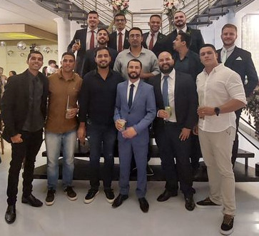

O que é o CSKA?
Em meados de 2010, um grupo de amigos, que estudavam juntos, foi convidado a participar de um torneio de futebol escolar, denominado CHAMPIONS DO MARRUBSON, neste torneio, cada turma deveria escolher um time Europeu, que mostraria o nome do time da classe. Então, foi escolhido o CSKA, que é um time russo com alguns títulos, mas não figurava dentre os mais fortes da Europa, naquele momento. Logo, o 2° E, do CEM09 de 2010, ficou conhecido como o CSKA. E, até hoje é conhecido assim.
Com o passar dos anos, o grupo foi crescendo e se consolidando, formando hoje, uma amizade de mais de 15 anos. O futebol hoje, é pouco praticado pelos amigos, porém ainda há encontros para eventos, como churrascos, bares, jogos de video game e, as vezes, casamentos.
Desde o inicio, o grupo foi criando vínculos e aumentando a amizade, um evento que foi importante para a consolidação da amizade, foi o curta o 9, que se tratava de um trabalho em grupo, onde era pra ser feito um curta metragem, no caso do CSKA, foi sobre agrotóxicos.
Infelizmente, devido direitos autorias, o audio do vídeo foi removido.
O CSKA Original
O CSKA Moscou, ou Clube de Futebol do Exército Central da Rússia, é um dos clubes mais tradicionais e bem-sucedidos da Rússia. Fundado em 1911, o time tem uma rica história e é conhecido por suas cores vermelho e azul. O CSKA tem uma forte presença no futebol russo, tendo conquistado múltiplos campeonatos da liga, copas nacionais e títulos internacionais, incluindo a UEFA Europa League em 2005.
O clube é também famoso por sua equipe de base e por desenvolver talentos que se destacam tanto no cenário nacional quanto internacional. Sua casa é o Estádio VEB Arena, que possui capacidade para cerca de 30 mil torcedores. O CSKA é conhecido por sua base de torcedores apaixonados e rivalidades acirradas, especialmente com o Spartak Moscou, o que torna seus jogos muito intensos. Além do sucesso no futebol, o clube faz parte de uma organização maior, o CSKA, que inclui diversas modalidades esportivas, refletindo sua herança como um clube militar.